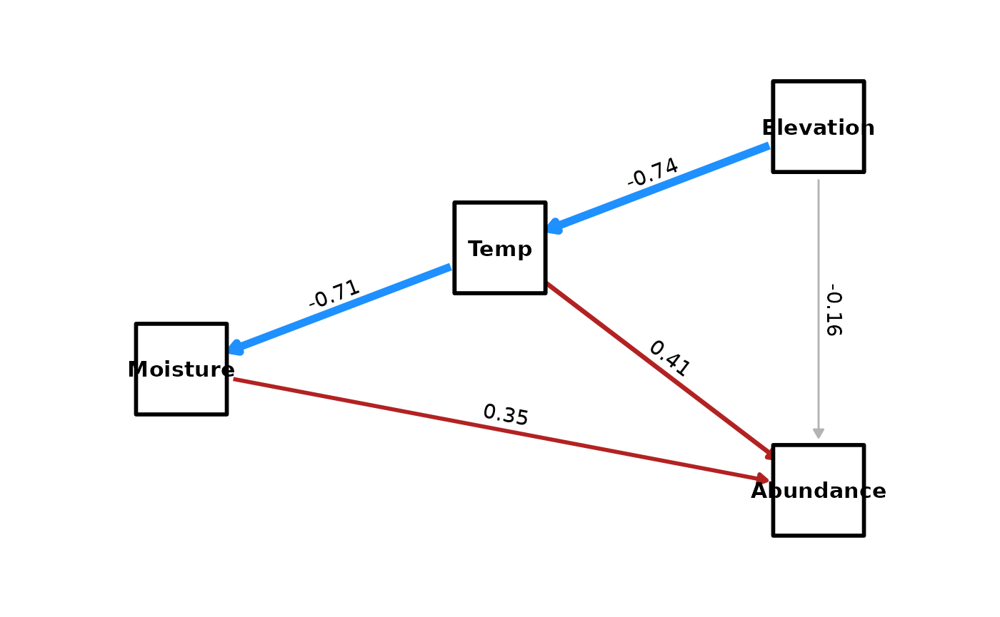

Introduction
Causal inference often requires investigating how an effect occurs. Does affect directly, or does it work through a mediator ?
The because package provides a fully automated Bayesian
mediation analysis tool, because_mediation(), which
decomposes the Total Effect of an exposure on an outcome into: 1.
Direct Effect: The effect of
not mediated by other variables in the graph. 2. Indirect
Effect(s): The effect propagated through intermediate variables
().
This is calculated by multiplying the posterior distributions of coefficients along each path, preserving full uncertainty quantification.
Example: Ecological Mediation (Elevation Gradient)
In this example, we investigate how Elevation affects Plant Abundance. We hypothesize that Elevation acts through a causal chain involving Temperature and Soil Moisture:
- Elevation determines Temperature (higher elevation lower temperature).
- Temperature influences Soil Moisture (lower temperature lower evaporation higher moisture).
- Abundance is driven by Moisture, Temperature, and potentially a direct effect of Elevation (e.g., due to UV radiation or partial pressure of gases).
1. Simulate Data
We simulate plots along an elevation gradient.
library(because)
set.seed(42)
N <- 200
# 1. Elevation (Exogenous variable)
# Ranges roughly from 500m to 1500m
Elevation <- rnorm(N, mean = 1000, sd = 200)
# 2. Temperature (Mediator 1)
# Decreases with Elevation (Lapse rate approx effect)
# Coef: -0.01 implies 100m climb -> -1 degree C
Temp <- 25 - 0.01 * Elevation + rnorm(N, sd = 2)
# 3. Moisture (Mediator 2)
# Driven by Temperature. Cooler -> Moister.
# We model a negative relationship with Temp.
Moisture <- 20 - 2 * Temp + rnorm(N, sd = 5)
# 4. Plant Abundance (Outcome)
# - Positive effect of Moisture (+0.5)
# - Positive effect of Temperature (+1.5)
# - Direct negative effect of Elevation (-0.005) due to harsh conditions
Abundance <- 10 + 0.5 * Moisture + 1.5 * Temp - 0.005 * Elevation + rnorm(N, sd = 10)
eco_data <- data.frame(Elevation, Temp, Moisture, Abundance)
head(eco_data)
#> Elevation Temp Moisture Abundance
#> 1 1274.1917 8.256225 10.162114 18.60961
#> 2 887.0604 16.796951 -17.940260 26.01320
#> 3 1072.6257 16.616393 -12.955352 32.96032
#> 4 1126.5725 17.853353 -15.461372 31.77216
#> 5 1080.8537 11.437740 -5.767259 12.26349
#> 6 978.7751 12.910538 -10.814769 34.705242. Standardize Data
Important: For mediation analysis, it is highly recommended to standardize your continuous variables (mean = 0, sd = 1) before fitting.
Standardization ensures that: 1. Coefficients are comparable: All effects are expressed in standard deviation units (standardized effects). 2. Scale Invariance: The calculation of Indirect Effects (product of coefficients) is more interpretable relative to the Total Effect. 3. Convergence: MCMC sampling often behaves better with standardized scales.
# Standardize all variables
eco_data_std <- scale(eco_data)
head(eco_data_std)
#> Elevation Temp Moisture Abundance
#> [1,] 1.43491089 -2.4146372 2.79684187 -0.2519564
#> [2,] -0.55122296 0.6086453 -1.01750576 0.4847317
#> [3,] 0.40079909 0.5447309 -0.34090197 1.1759989
#> [4,] 0.67756730 0.9825952 -0.68104515 1.0577725
#> [5,] 0.44301183 -1.2884308 0.63474109 -0.8834208
#> [6,] -0.08069081 -0.7670836 -0.05035969 1.34962603. Fit the Structural Equation Model
We define the structural equations reflecting our causal DAG. Notice
the chain:
Elevation -> Temp -> Moisture -> Abundance.
# Define the structural equations
eco_eqs <- list(
Temp ~ Elevation,
Moisture ~ Temp,
Abundance ~ Moisture + Temp + Elevation
)
# Fit the model
# We use a short chain for demonstration purposes. Use more iterations for real analysis.
fit <- because(
equations = eco_eqs,
data = eco_data_std,
n.iter = 2000
)
#> Converted data.frame to list with 4 variables: Temp, Elevation, Moisture, Abundance
#> Warning in rjags::jags.model(model_file, data = data, inits = inits_list, :
#> Unused variable "ID2" in data
#> Compiling model graph
#> Resolving undeclared variables
#> Allocating nodes
#> Graph information:
#> Observed stochastic nodes: 600
#> Unobserved stochastic nodes: 11
#> Total graph size: 3021
#>
#> Initializing model
summary(fit)
#> Mean SD Naive SE Time-series SE 2.5% 50%
#> alpha_Abundance 0.000 0.069 0.003 0.003 -0.132 -0.001
#> alpha_Moisture -0.002 0.051 0.002 0.002 -0.099 -0.003
#> alpha_Temp 0.005 0.048 0.002 0.002 -0.080 0.004
#> beta_Abundance_Elevation -0.157 0.101 0.005 0.005 -0.341 -0.160
#> beta_Abundance_Moisture 0.353 0.091 0.004 0.004 0.180 0.356
#> beta_Abundance_Temp 0.408 0.119 0.005 0.005 0.189 0.411
#> beta_Moisture_Temp -0.709 0.052 0.002 0.002 -0.806 -0.709
#> beta_Temp_Elevation -0.738 0.048 0.002 0.002 -0.830 -0.743
#> sigmaAbundance 0.935 0.047 0.002 0.002 0.854 0.932
#> sigmaMoisture 0.712 0.035 0.002 0.001 0.644 0.712
#> sigmaTemp 0.678 0.034 0.002 0.001 0.617 0.678
#> 97.5% Rhat n.eff
#> alpha_Abundance 0.138 1.004 480
#> alpha_Moisture 0.087 1.002 480
#> alpha_Temp 0.107 1.001 693
#> beta_Abundance_Elevation 0.054 1.001 480
#> beta_Abundance_Moisture 0.537 0.998 493
#> beta_Abundance_Temp 0.628 1.000 578
#> beta_Moisture_Temp -0.612 0.998 550
#> beta_Temp_Elevation -0.648 1.013 492
#> sigmaAbundance 1.030 0.998 442
#> sigmaMoisture 0.783 0.998 603
#> sigmaTemp 0.744 1.000 604
#>
#> DIC:
#> Mean deviance: 1377
#> penalty 11.16
#> Penalized deviance: 1388We can also plot the fitted causal model with its standardised paths:
plot_dag(fit)
4. Perform Mediation Analysis
We want to understand the Total Effect of Elevation on Abundance, and decompose it into its direct and indirect components.
# Run Mediation Analysis for Elevation -> Abundance
med_results <- because_mediation(fit, exposure = "Elevation", outcome = "Abundance")Inspect the Summary
med_results$summary
#> Type Mean SD Lower Upper
#> 1 Total Effect -0.2736813 0.06781102 -0.4064066 -0.12873398
#> 2 Direct Effect -0.1570835 0.10138569 -0.3412616 0.05359304
#> 3 Total Indirect Effect -0.1165978 0.07616327 -0.2766890 0.02484438Interpretation (Standardized Units): * Total
Effect: The net impact of Elevation on Abundance in SD units. *
Direct Effect: The path
Elevation -> Abundance (independent of mediators). *
Total Indirect Effect: The sum of all mediated paths.
In our simulation, Elevation lowers Temp, which raises Moisture, which
increases Abundance.
Inspect Individual Paths
The because_mediation function automatically traces all
valid paths from exposure to outcome in the DAG.
med_results$paths
#> Path Type Mean SD
#> 1 Elevation -> Temp -> Moisture -> Abundance Indirect 0.1847236 0.05171803
#> 2 Elevation -> Temp -> Abundance Indirect -0.3013214 0.09070711
#> 3 Elevation -> Abundance Direct -0.1570835 0.10138569
#> Lower Upper
#> 1 0.09250807 0.30043116
#> 2 -0.47230373 -0.14221839
#> 3 -0.34126157 0.05359304We expect to see three distinct paths:
-
Direct:
Elevation -> Abundance -
Short Indirect:
Elevation -> Temp -> Abundance- Elevation lowers Temp (negative correlation); Temp increases Abundance (positive correlation).
- The product of these effects is Negative.
-
Long Indirect (Chain):
Elevation -> Temp -> Moisture -> Abundance- Elevation lowers Temp (negative).
- Lower Temp raises Moisture (negative relationship positive change in moisture).
- Higher Moisture raises Abundance (positive).
- The chain involves two negative links and one positive link, resulting in a Positive indirect effect.
The function handles this decomposition automatically, providing credibility intervals for each specific mechanism.